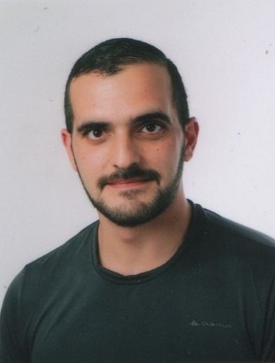
Portefólio Reflexivo de Aprendizagens
Técnico Instalador de Sistemas Solares Fotovoltaicos
Daniel Ventura | CFP - Porto | 20 de maio de 2021
Índice
Portefólio Reflexivo de
Aprendizagens
Introdução
O meu nome é Licínio Daniel Ventura dos Santos Silva do Rosário. Sou natural de Leça da Palmeira. Tenho 30 anos. Vivo com a minha mulher e com o meu filho em Vila Nova de Gaia. Gosto de ser tratado por Daniel e os meus passatempos favoritos são: ver filmes, navegar na internet, ouvir música e jogar no computador. Ao nível do desporto, gosto de andar de bicicleta, correr e fazer exercício físico.
Já agora, sou portista por carinho ao meu falecido avô Joaquim Rocha dos Santos - o Pelé do dominó em Matosinhos. Enquanto o meu avô adorava ver o Jardel a jogar e tinha um pequeno altar dedicado ao Futebol Clube do Porto (FCP), já eu não dou tanta importância ao futebol, mas dou ao desporto e gosto de ver o meu clube a ganhar.
Boa leitura!
Daniel J
História de Vida
Iniciei o primeiro ciclo na Escola Primária da Amorosa. As primeiras lembranças que tenho da escola baseiam-se nas disciplinas de Matemática, de Estudo do Meio e de Português. Gostava de estudar a natureza e fazer cálculos, mas era no Português que a professora nos obrigava a desenvolver melhor. Naquele tempo, ainda se levava umas reguadas nas mãos. Lembro-me de fazer cópias, ditados, composições e, por cada erro ortográfico que dava, era uma reguada na palma da mão que levava. Naquela altura, era difícil de ver um ponto positivo na situação, mas, hoje em dia, sei que foi por uma boa causa.
Lembro-me da minha mãe falar sobre os seus cursos na TECLA, empresa de formação, e como aprendeu a datilografar à máquina. A minha mãe costumava dizer que esses seus cursos estavam ultrapassados devido à chegada dos computadores. Já o meu avô dizia que ninguém dava importância à caligrafia e costumava mostrar-me a sua escrita, bem pequena, redondinha e desenhada.
Desde então, a língua sofreu várias alterações e, com a vinda das novas tecnologias, ainda se acentuaram mais. O smartphone passou a ser muito utilizado. Eu próprio escrevo a maior parte do tempo a partir dele e reparo que alguns amigos e familiares meus escrevem com k e com x para abreviar, às vezes nem consigo ler o que está escrito ou então demoro muito mais tempo do que o deveria demorar se estivesse escrito corretamente. No entanto, esporadicamente abrevio a escrita, mas faço por respeitar os padrões da abreviação escrita. Já quando se trata de smiles, sou capaz de enviar uns quantos. Estes smiles são os meus favoritos: ^.^ e 8) mas apenas envio quando a conversa é querida ou se pretendo um smile inteligente.
Hoje em dia, os smartphones revolucionaram a comunicação social. O meu smartphone traz-me a televisão, a rádio, a web, a internet e aplicações para o que for preciso. A interação com ele é tão grande que ele até me dá o estado do tempo local e atualizado, assim como os resultados desportivos ao minuto e as notícias do dia, vem acompanhado de telemóvel e até serve de lanterna, câmara e microfone. Gosto muito de estar ligado e a surfar por aí e é na internet que eu vejo o que se passa no mundo à minha volta; nela posso conversar à distância com a minha família e posso ver vídeos em direto dos meus assuntos favoritos publicados por internautas entendidos.
Bem que isto da internet é uma maravilha. O pior é separar a informação que nos é constantemente bombardeada e conseguir distinguir a realidade da ficção. Existe até quem publique notícias falsas em troca de visualizações. As visualizações podem se traduzir em dinheiro e esta troca torna-se muito apelativa para quem quiser criar um negócio virtual. Daí vem que, quando encontro algo enquanto pratico o meu surf habitual, dedico-me a selecionar e a personalizar o conteúdo da informação que pretendo. Assim, obtenho uma experiência completamente personalizada ao meu gosto e adequada às minhas necessidades. Posso dizer que a língua inglesa também permitiu que eu obtivesse o conhecimento para manusear as tecnologias mais facilmente.
O impacto das mudanças decorrentes da Revolução Industrial, faz-se sentir ainda hoje no séc. XXI porque a evolução tecnológica afirmou-se como sendo necessária para o desenvolvimento do ser humano.
Entre 1730 e 1850 surgiram vários eventos na história da Inglaterra que, devido a fatores já existentes no país proporcionaram a base de suporte para a revolução industrial. Desses fatores pode destacar-se a existência de uma revolução agrícola (lã e linho) capaz de gerar capital e sustento. Este capital veio a servir como base de investimento na indústria vindoura. Além do capital a Inglaterra já possuía uma Indústria têxtil com manufatura especializada. Ainda assim os ingleses queriam mais, melhor e mais rápido.
Foi então que apareceram inovações de carácter técnico e científico, tais como:
· A máquina de cardar de Richard Arkwright, em 1733.
· A máquina a vapor de James Watt, em 1777.
· O tear mecânico de Cartwright, em 1785.
Estas inovações na indústria possibilitaram avanços noutras áreas produtivas. De notar que existia minério no solo britânico e que este também servia para bancar com os custos dos diferentes avanços de caráter técnico e científico que vieram a acontecer ao longo da Industrialização.
Um aspeto importante ao analisar a revolução industrial é o facto de se evidenciar ao mesmo tempo uma revolução nos meios de transporte. O poder político a favor da inovação contribuiu para que fosse criada legislação adequada para a indústria, proporcionou também a criação de vias de transporte para o encaminhamento de mercadorias e para a livre circulação de pessoas.
Neste contexto a surgiu uma alteração demográfica. As pessoas começaram a deixar os campos para ir trabalhar nas indústrias. O que fez com que estas se instalassem perto do trabalho, muitas vieram a constituir família e surgiram novos aglomerados populacionais. Estes aglomerados transformar-se-iam em vilas e cidades construídas por famílias de trabalhadores. O excesso de mão de obra que aconteceu após este crescimento, refletiu-se na deterioração das cidades e originou pobreza, crimes e guetos cheios de conflito e violência.
Para demonstrar a violência deste tempo o autor de Um Conto de Natal - Charles Dickens. Escreveu Oliver Twist. - Uma história que retrata a escravatura infantil e o método de agir por parte das seitas de pessoas que acolhiam os meninos em troca de trabalho, bem como a garantia de um sítio onde dormir e um prato em cima da mesa.
No século XIX a industrialização avança para além do domínio dos ingleses e a França surge como o segundo país a industrializar-se. Seguidamente aparecem os Estados Unidos da América e o fenómeno continua a propagar-se para países como a Alemanha, a Suécia, o Japão, a Rússia, o Canadá e a Austrália.
Desde então a economia nunca mais deixou de estar dependente da indústria, bem como de todas as transformações que dela ocorreram. A grande transformação na sociedade a nível da revolução industrial vê-se nas alterações ao nível do trabalho, quotidiano, cultura e mentalidade.
Ainda desta transformação advêm outros fatores económicos a evidenciar as diferenças entre os países ricos e pobres, industrializados e não industrializados. Desta diferença começa-se a demarcar a forma de gerar riqueza e nível de vida.
O nível de vida do meu país em relação à Europa é um nível considerado médio-baixo. Existem países acima e abaixo de nós. Uns vivem muito bem, outros vivem muito mal. Nós aqui, atualmente não vivemos tempo de guerra, nem de doença e não morremos à fome. Contudo ainda existem países onde a fome, a guerra e a doença dominam a população e prevalecem durante muitos anos.
Ainda na escola primária, tive alguns problemas de saúde que me atrasaram a vida escolar; por causa disso, reprovei na segunda classe e fiquei para trás em relação aos meus colegas. Fiquei triste por ficar para trás, mas, em contrapartida, ganhei novos colegas e uma nova professora dos quais passei a gostar ainda mais do que os anteriores. Entretanto, a minha saúde melhorou e acabei por concluir esta nova segunda classe.
Prosseguindo para a terceira classe, deparei-me com a transição que a minha escola efetuou pelo motivo de obras. Então foi aí que os alunos todos transitaram para o adro da igreja de Leça da Palmeira para que as obras fossem iniciadas.
Na terceira classe, iniciei uma nova disciplina, a língua Inglesa e foi explicado que esta disciplina serviria de apoio para o Inglês que viria a ter no segundo ciclo.
I started learning the English language at school. In the third grade, I was introduced to my secondary tongue. Now when I think about it, I am reminded that I have had previous encounters with this language through my social life. Either influenced by the mass-media or by family. When I got to the third grade, I was already aware that were in a multi-language world. That is why I could keep up with the lessons.
Later, when I went to the fifth grade, it really became second nature to me. Only later did I realise that it could also be a bridge to another foreign language. That was when I took a trip to France. While I was there, I had the need to go shopping or talking to people. One day, I met a person that worked and lived around my father-in-laws establishment at Fontainebleau. That new friend of mine also used English as a second language regularly. We used to smoke together in the alley and have a few conversations. In these conversations we used to talk about our own cities, weather, music, videogames and women. Back then, each time I didnt know a word in French, he would kindly try to translate it into English so that I could understand what he was saying. I would do the same for him in terms of Portuguese. We ended up having some coffee in his house and with his family. We talked for some time, drank a few beers and played some videogames.
To me, this experience proved that I could handle myself abroad and resort to English as a secondary language.
Acabei por concluir a quarta classe e prossegui os estudos para o quinto ano. Foi aqui que mudei de localidade e deixei de morar com o meu avô e mãe, passando a morar com a minha avó na casa do meu tio.
Já em casa do meu tio, transitei da escola primária da Amorosa em Leça da Palmeira, para a Escola Básica com 2.º e 3.º ciclo em Guifões. Fiquei algo triste por mudar de localidade, pois tive de deixar os meus colegas do primeiro ciclo e conhecer colegas novos no segundo ciclo. No início correu bem, pois tinha disciplinas novas, além das que já conhecia, como o Inglês, Matemática e o Português. Comecei a ter também Educação Visual e Tecnológica, Música, História e Geografia, Ciências da Natureza e Educação Moral e Religiosa. Após ter concluído o quinto ano pedi a minha mãe que me removesse da disciplina de educação moral e religiosa, algo que sempre considerei ser para quem não tinha educação em casa. Eu, como tive a minha mãe a ensinar-me a religião e a moral, não senti necessidade de continuar nessa disciplina.
O sexto ano também correu bem e eu concluí o segundo ciclo com sucesso, cálculo que na altura teria uns treze anos. Eu com treze anos passei a tomar conta de mim, a minha avó mudou-se para a Senhora da Hora e eu continuei em Guifões pois era mais perto da escola. Esta fase da minha vida foi para mim a descoberta de outra maneira de estar no mundo. Tinha tarefas a cumprir para comigo e com a casa do meu tio. O que me tornou desinteressado um pouco pela escola. Ter que tomar conta de mim influenciou-me de tal maneira que passei a pensar em trabalhar e a morar sozinho. Isto fez com que eu deixasse a escola de lado e optasse por ir trabalhar.
Assim que me deparei a decisão de procurar trabalho fiz por encontrar um jornal e pesquisar nos classificados as ofertas de emprego mais adequadas para mim.
Foi então que me foi oferecido um trabalho como comercial de serviços. Neste trabalho aprendi muito sobre a comunicação e interação que um vendedor deve ter com o cliente. Foi entusiasmante, sim; mas não era propriamente aquilo que eu pretendia fazer da minha vida. Tive algum sucesso e aprendi algo com isso, tendo mesmo chegado a utilizar o Inglês nalgumas situações.
My acquaintance with the English language kept growing as the years went by. Despite all my previous training at school, I enjoyed and profited from getting involved with this language. Still in my youth, while I was a teenager I had a chance to improve my computer skills. Being English a universal language in the computer world, I started to develop a more technical knowledge along my experiments in various conditions. For instance: getting to know an operating system which uses English at its core, studying a computer program and its tools therefore learning new vocabulary, being able to write and read technical information in internet forums, surfing the web, watching videos and listening to music, even meeting someone online and having a conversation. I had it all. In addition, another thing that allowed me to become more proficient in English, where videogames. I can recall my first PlayStation and some of its games. One of the games I remember more fondly and that shows how we can improve our English from games, since we want to understand what the characters are saying, is Final Fantasy VIII. In this role-playing game (RPG) I had tons of hours of script to read. I loved the plot and all the wonderful emotions the game provided me with. Another game that got me quite excited was Metal Gear. In this game I would have tons of hours of dialogue to hear and read. These games mean a lot to me as a gamer and the memories of playing them still excite me today, thus making these games my all-time favorites.
|
|
|
|
|
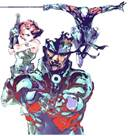 |
|
PlayStation Videogame System |
|
Final Fantasy VIII |
|
Metal Gear Solid |
Estes jogos, para além da vertente lúdica, tinham uma componente de aprendizagem que, mais tarde na vida, muito me vieram a ajudar a procurar outros voos.
Existiram outras oportunidades de trabalho na área da Hotelaria e Restauração. Trabalhei nos restaurantes McDonalds, mais especificamente no Norte Shopping e mais tarde fui abrir o restaurante do Campus S. João, a minha função era maioritariamente operador de caixa. Por esta altura comecei a namorar e acabei por arranjar casa com a minha primeira mulher. Já teria aí uns dezasseis anos quando tive a oportunidade de ir tirar a carta com a ajuda da minha avó.
A vontade de estudar aumentava de dia para dia. Assim que tive oportunidade, matriculei-me no curso do 3.º ciclo do ensino básico recorrente por unidades capitalizáveis, em artes visuais.
O meu gosto pelas artes é natural. Já desde pequeno que gostava de fazer uns sarrabiscos. Cheguei a fazer ilustrações muito boas dos meus personagens favoritos. Contudo, na disciplina de artes visuais a matéria já era outra. Presumindo conhecimentos já adquiridos nas disciplinas de Educação Visual e Tecnológica do curso básico do 2.º ciclo. O professor introduzira-nos à geometria descritiva. Ora eu já tinha noção do que era uma linha e um ponto. No entanto pouco sabia em relação às retas e a planos. Passei a ter ideia do que significa traçar uma reta perpendicular, obliqua ou paralela. Este momento da minha vida faz-me lembrar o desenho técnico.
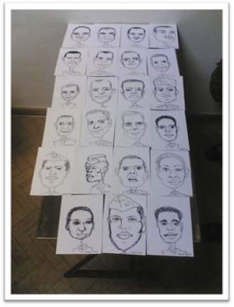
Caricaturas do meu pelotão desenhado por mim.
O meu conhecimento sobre desenhos técnicos era muito pouco.
Em desenho técnico aprendi a fazer desenhos rigorosos com lápis Nº2 à escala de 1/1 em folhas A3.
Para elaborar os meus desenhos técnicos comecei por construir um rebordo com 20mm de espessura no lado direito da folha e 10mm nos restantes lados. Depois desenhei algumas construções geométricas para me habituar ao desenho rigoroso e às suas ferramentas (Régua, Compasso, Esquadro). Já com alguma experiência prática e com a primeira folha completa aprendi a construir o desenho da minha legenda de acordo com o formato ISO.
Abordei a temática do desenho técnico como um método visual para arquitetos, engenheiros e mestres de obra se entenderem e interpretarem a representação visual com rigor dos desenhos que são pedidos (Peças, Plantas, Esquemas).
Aprendi a desenhar projeções de peças ortogonais em paralelo com vistas principais (frente/cima) e restantes (lateral/posterior). As peças que desenhei de início eram simples e normalmente só continham arestas visíveis algumas arestas invisíveis e linhas de eixo.
As peças começaram a variar e a dificultar a interpretação visual. Foi aqui que aprendi a desenhar cortes com rebatimento nas minhas peças de desenho técnico passei também a usar escalas diferentes pois a maioria das peças mais simples eram desenhadas à escala real de 1/1.
Daqui para a frente passei a saber muito mais sobre desenhos técnicos.
Falando de computadores; O Computer Assisted Design (CAD) ou Desenho Assistido por Computador (DAC) é um software de computador muito interessante e útil, a distribuição comercial mais conhecida deste software é o AutoCAD.
A minha experiência com o AutoCAD tem vindo a ser muito produtiva, consigo fazer desenhos técnicos das minhas peças e representá-las à escala que pretender. Sei também fazer as legendas e o preenchimento ISO dos desenhos para que não se percam.
Aprendi a interpretar plantas de edifícios bem como os seus esquemas elétricos. Construí a planta da minha casa assim como o seu esquema elétrico.
Tive a oportunidade de conhecer o CAD Simu, um software que permite simular esquemas elétricos em tempo real. Com o CAD Simu construí alguns esquemas elétricos domésticos e industriais. Simulei também o circuito da minha casa e testei para verificar o seu funcionamento normal.
No decorrer do curso de computadores, eu estava a tornar-me um operador de instalação e reparação de computadores. Para perceber melhor sobre os computadores, tive de aprender melhor sobre a sua arquitetura interna e estudei mais um pouco sobre a eletricidade e esquemas elétricos. Era fundamental perceber o seu funcionamento, uma vez que tinha e queria montar e desmontar na totalidade os computadores. Isso implicava a parte elétrica e todas as suas ligações. Comecei a ganhar alguma noção do que era a eletricidade e os esquemas elétricos.
Por falar em esquemas elétricos, no curso de computadores, eu não tinha ideia o quão abrangente era a eletricidade doméstica e ainda eram bastante reduzidos os meus conhecimentos nesta área. Para poder criar os meus primeiros esquemas elétricos domésticos, tive de adquirir uma experiência mais alargada a nível da eletricidade.
Neste curso, apenas aprendi a construir circuitos básicos com lâmpadas led, fusíveis, resistências, díodos, condensadores, transístores e cargas. Apliquei intensivamente a lei de Ohm assim como a lei de Kirchoff em variados cálculos.
Nunca tinha feito uma instalação elétrica doméstica com um circuito de iluminação e tomadas. Um dia, lá em casa, precisei de instalar um novo ponto de luz e também uma nova tomada, ali tive que relembrar os meus conhecimentos prévios adquiridos em relação à eletricidade e automação do curso de computadores.
Desta forma, foram o contato com as máquinas e a experiência de vida que ajudaram a realizar o meu biscate à boa maneira portuguesa, o desenrasque.
Quer com correntes contínuas (CC), quer com correntes alternadas (CA). Tinha de saber que nos circuitos domésticos é utilizada a corrente alternada e chegam atualmente 230V de tensão, podendo eventualmente conter um sistema trifásico com terra, neutro e 3 fases em vez de monofásico com terra, fase e neutro. Além disto devia saber o que são os barramentos de terra e de neutro. Distinguir também todos os elementos do meu circuito, quer no esquema, quer na vida real foi outra mais-valia para mim.
Ao investigar o circuito elétrico lá de casa, tomei nota que tinha um sistema monofásico com um disjuntor diferencial de 25A (0,30mAh) de proteção à fase (fio castanho). De seguida, verifiquei que os meus circuitos de iluminação e de tomadas continham um disjuntor interruptor de 10A, fios condutores de 1,5 mm2 e um interruptor de 16A, com fio condutor de 2,5 mm2, respetivamente.
Com a ajuda de ferramentas, desmontei a frente do quadro elétrico da parede, descarnei as pontas dos fios condutores para a minha nova instalação e, de seguida, apertei os fios nos seus respetivos bornos condutores. Testei o interruptor-diferencial, instalei os interruptores novos e os bornos na calha do quadro elétrico e procedi à sua identificação e verificação de serviço.
Passei e fixei os cabos condutores dos meus dois sistemas até às caixas de derivação, assim como liguei os bornos ligadores e procedi à fixação do interruptor, tomada e casquilho.
Por fim, com tudo pronto, testei o circuito elétrico de iluminação e o de tomadas, constatando que tudo estava ok. A satisfação e o sentimento do trabalho realizado foram de pouca duração, porque, logo de seguida, pensei em montar mais dois sistemas domésticos de iluminação, a comutação de iluminação em escada e a comutação de iluminação em lustre.
No caso de uma luz automática de escada, assim que uma pessoa acende a luz no botão de serviço é ativado um relógio que inicia uma contagem decrescente. Quando o relógio pára a luz se desliga.
Esta experiência veio avivar a minha memória em relação à eletricidade bem como me trouxe mais contacto e conhecimento com a eletricidade doméstica e com os quadros elétricos e seus esquemas.
Ainda no curso de computadores, foi necessário aprender sobre eletricidade industrial, porque podia eventualmente ter de instalar um sistema de Universal Power Supply (UPS) em instalações de quadros elétricos industriais, uma vez que nos deslocávamos a empresas para efetuarmos intervenções nesta área.
Para começar verifiquei que era necessário ir buscar um conhecimento mais profundo em relação à eletricidade.
Neste aspeto, estudei o uso da corrente alternada a (400V) no acionamento de um motor trifásico. Aprendi novas simbologias e novos tipos de esquemas elétricos (Industriais). Estes esquemas serviram para interpretar o funcionamento de uma máquina industrial.
Para lidar com as máquinas industriais é necessário existir um circuito de comando.
Quando montei o quadro elétrico industrial segui um esquema de inversão de marcha de um motor assíncrono trifásico com rotor em curto-circuito.
Comecei por ir buscar os meus componentes elétricos. Usei um disjuntor diferencial para proteger dos contactos indiretos, porta fusível às três fases para proteger o circuito, um disjuntor interrutor para ligar a bobine do circuito de comando, dois contatos-motor para comandar o motor e um relé térmico para proteger também o motor.
Para prevenir contatos elétricos diretos com as máquinas é comum encontrar uma bobine que nos reduza a voltagem do circuito de comando para um valor mais baixo e seguro (normalmente 24v ou 48v).
Usei também um botão de emergência (STOP) e mais dois botões (FORWARD/REVERSE) bem como tive que usar bornos para o circuito de potência e bornos para o circuito de comando.
Depois de ligar os dois circuitos e confirmar com o multímetro que todo estava bem ligado, foi hora de ligar a alimentação do motor ao quadro e a alimentação do quadro elétrico do motor. Testei o motor e funcionou propriamente, com o botão de marcha a arrancar o motor, o botão para parar a desligá-lo e o botão de inversão de marcha a reverter o sentido de rotação do motor. Tudo tal e qual como tinha que ser.
Daqui ainda cheguei a montar mais esquemas industriais como o caso do arranque direto, do arranque dupla estrela-triângulo de 9 bornos e do arranque estrela-triângulo.
Verifiquei também que na indústria são usados os automatismos industriais como maneira de programar o uso dos nossos motores consoante o trabalho.
Para perceber um automatismo é necessário entender a relação homem-máquina. Ora se eu precisar de um sistema em que não tenha que ir lá pessoalmente cuidar dele então eu necessito de criar um automatismo.
Isto permite-nos programar o que quer que seja, no caso dos automatismos industriais, existem contactos temporizadores que fazem quase o mesmo efeito e permitem arrancar com motores estrela/triângulo, um arranque subtil, ou sequenciar o arranque de vários motores num sistema, o caso de uma linha de produção.
Este uso permite às fábricas um maior controlo energético e eficiência no trabalho, por vezes reduzindo em muito o custo da fatura elétrica num negócio.
Após concluir o curso de Instalação de Computadores tentei continuar no mercado de trabalho através do estágio na empresa Chip7 no centro comercial Bom Sucesso.
Um dia fui convidado a proceder à manutenção dos órgãos e equipamentos elétricos do armazém. Neste contexto foi-me passada uma folha de manutenção com todos os pontos a verificar. Por vezes uma pequena limpeza do pó acumulado é suficiente, mas isto só não bastava, pois, cada ponto da folha de manutenção tinha que ser marcado como visto. Então pus as mãos à obra e fui ver os quadros elétricos. Verifiquei que todos eles tinham o esquema elétrico presente, no entanto estava desatualizado. Procedi à atualização do esquema elétrico conforme a instalação encontrada no local. Dei um reaperto aos parafusos, medi as tensões, continuidades e as correntes de fuga. Descobri também um quadro parcial que verifiquei, fiz medições, conferi e reapertei, este tinha o esquema elétrico em dia. Testei todos os disjuntores diferenciais com a função TEST e testei todos os interruptores à procura de anomalias. Como não encontrei anomalias procedi à limpeza do quadro através de um pano seco e até mesmo com escova e pá. Todos os pontos da folha de manutenção foram verificados e no final assinei e datei a folha.
Começo por pensar como vai ser a estufa. Sei que ela vai ter que operar um sistema de rega e uma claraboia. Sei também que vou ter a necessidade de controlar a temperatura e a humidade. Além deste levantamento de projeto e situações eu devo elaborar um GRAFCET (Uma espécie de croquis sobre o meu sistema) o meu GRAFCET é construído por etapas, ações e transições. A minha etapa inicial neste caso é a etapa 0 (zero) e é a etapa que tem como função a inicialização e reinicialização do meu sistema. Na transição para a etapa 1 vou dizer que: Se o sensor de humidade indicar uma humidade inferior a 30% na ação seguinte o sistema liga a bomba de água e ativa um temporizador. Então a minha etapa seguinte vai ser desligar a bomba caso os sensores indicarem condições normais ou até o temporizador terminar. Para a claraboia vou colocar na transição que pretendo que esta abra (ligue o motor) se sentir a temperatura superior a 30%. Na transição seguinte tenho deste modo um fim de curso que irá desligar o motor e ativar mais um temporizador para que o sistema reinicie na etapa final. Com isto em mente tenho o meu GRAFCET concluído e já posso criar a minha equação lógica que vai interpretar a minha ideia e transforma-la numa linguagem adequada para o meu autómato. As equações lógicas são estruturadas usando o método das etapas anteriores, onde cada ação prepara a etapa seguinte e repõe a etapa anterior. com tudo isto, é possível elaborar um esquema em LADDER (programa de criação de esquemas para autómatos) e deste modo construir o programa que vai ser introduzido no Controlador Lógico Programável CPL ou PLC (Programmable Logic Controller em Inglês). Este aparelho controla a automação através de entradas e saídas, digitais e analógicas.
Após transferir o programa para o CPL, iniciar o sistema, correr o programa e verificar o funcionamento normal de todo o sistema posso então dizer que tenho um sistema autómato.
Energias limpas são aquelas provenientes de uma transformação energética sem impactos e cuja sua obtenção não cause prejuízos para o ambiente (a queima de combustíveis fosseis por exemplo), podem ser consideradas renováveis as energias cuja sua fonte não se esgote. A energia geotérmica (calor do solo), hídrica (movimento água), eólica (movimento vento), das marés (movimento das ondas marítimas) e do sol (radiação solar).
A energia elétrica funciona como um método de distribuição de energia para a humanidade e é provavelmente o tipo de energia mais conhecido do mundo atual. É com esta energia que grande parte da população aquece as casas, a água, a comida e alimenta todos os aparelhos domésticos.
Energia solar é a energia que emana do sol e todos os dias nos presenteia com a sua luminosidade, brilho e calor.
Para o olho humano o espetro eletromagnético é composto por luz visível. Esta luz visível, se for decomposta (prisma) origina as cores de luz (arco-íris). Para alguém que já tenha alguns estudos, o espetro eletromagnético é constituído por muito mais do que apenas luz. Sendo interpretado por comprimento de ondas eletromagnéticas, pudemos dizer que o comprimento de onda que está abaixo do vermelho é menos intenso e menos energético tendo o nome de infravermelho e que os comprimentos de onda que estão para cima do violeta são mais intensos e energéticos tendo o nome de ultravioleta. Depois de compreender um pouco o sol e os raios solares podemos então falar de energia solar como fonte de aproveitamento de energia para o uso humano.
Assim, devido aos estudos ao longo do tempo. Foi permitido ao homem, aproveitar a energia do sol, quer ao nível de calor, quer ao nível de eletricidade.
Quanto ao calor, já em tempos antigos se viam engenhocas para aproveitar o calor do sol, se pensarmos no efeito dos raios solares numa lupa, facilmente podemos dizer que estes raios estão a ser desviados e concentrados num ponto, o que faz com que esse ponto fique intenso, brilhante e muito quente.
O exemplo Português do estudo solar térmico é o caso do padre Himalaia que dedicou a sua vida á criação de fornos solares capazes de aquecer o que fosse aproveitando a energia solar.
No entanto o estágio terminou e eu não consegui vaga no mercado de trabalho. De imediato procurei continuar para o ensino secundário e fui chamado para o curso de técnico de instalação e reparação de redes informáticas. Um curso ministrado pelo Centro de Formação Profissional da Indústria Eletrónica (CINEL). Comecei o curso e concluí um único módulo inicial. Isto porque eu havia procedido a uma candidatura para a Força Aérea Portuguesa e acontece que fui chamado a prestar provas físicas, médicas e psicológicas no Hospital da Força Aérea (HFA), em Telheiras, Lisboa.
|
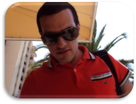 |
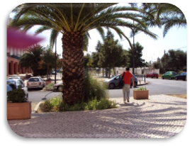 |
|
A minha carinha a despedir-me de minha mãe antes das provas. |
Lá vou eu para uma nova fase da minha vida. |
Nas provas físicas era exigida a realização de quatro corridas, em velocidade, comprimento, altura e resistência. Na velocidade tive que fazer uma corrida de 100m no tempo mínimo de 12s. Para o comprimento saltei 3m em salto livre. Na altura foram precisos 0,9m de salto passado. Já na resistência corri 2,4km em menos de 12,30min. Para além destas provas ainda tive que transpor 6m a uma altura de 5m, tive de fazer 20 extensões de braços no solo, sem paragens. E 30 abdominais em menos de um minuto.
|
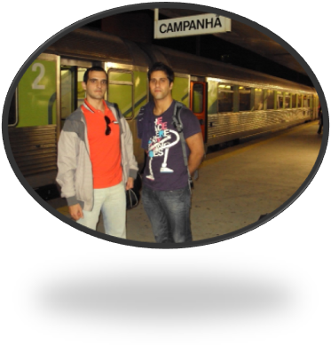 |
|
Os Candidatos |
Aqui está o meu regresso das provas. Infelizmente, este meu colega não passou e eu tive que regressar a casa para fortalecer os braços pois não consegui ser aprovado nas extensões de braços à primeira. Felizmente, estava motivado e treinei bastante. Ao fim de uma semana voltei às provas físicas e passei.
Nas provas médicas, fiz análises ao sangue e à urina, radiografias aos pulmões, exames à visão, à audição e aos dentes. Após obter os resultados, fui chamado perante a doutora que me fez um exame visual e algumas perguntas relevantes à minha condição médica.
Por fim acabei as provas com exames psicotécnicos, lembro-me de vários testes que efetuei no computador e de uma carga de perguntas destinadas a avaliar o meu perfil psicológico e social.
|
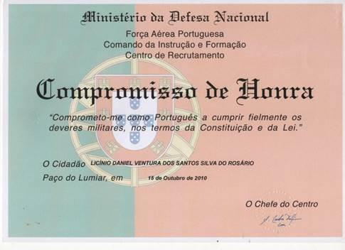 |
|
Aqui está o compromisso de Honra que recebi na cerimónia de aprovação das provas de admissão. |
Após ter sido aprovado nas provas de seleção comecei o meu período como recruta na Base Aérea Nº 2 da Ota, em Alenquer. Também conhecida como Centro de Formação Militar e Técnica da Força Aérea (CFMTFA) onde incorporei o corpo de alunos da recruta 03/2010 como soldado recruta e recebi o alojamento QB 13 juntamente com os meus camaradas de pelotão.
|
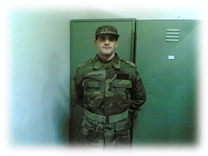 |
|
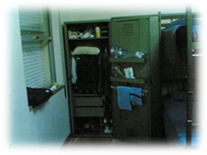 |
|
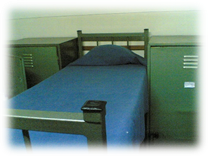 |
|
Eu no meu alojamento. |
|
O meu armário (sobrelotado). |
|
O meu ninho. |
A recruta foi dos melhores tempos que eu tive na minha vida. Foi na recruta que aprendi tudo o que dizia respeito à vida militar. Desde manhã cedo até à noite e mesmo de madrugada. Lembro-me de andar sempre a correr. Tinha que correr para as formaturas, refeições, aulas e alojamento. Além desta correria tinha aulas teóricas e práticas bem como recebia instrução de ordem unida (marchas e formaturas) e treino físico militar (corrida, flexões, abdominais ). Sempre com o meu bloco de notas e caneta na mão, tomei nota de tudo aquilo que era importante. Desde o conhecimento das leis da Constituição e da República Portuguesa até ao Regime de Disciplina Militar (RDM) e o Código de Justiça Militar (CJM) passando pela higiene, pela limpeza, pelo aprumo, pelo atavio, pelo armamento, pelo equipamento, pela orientação e pela topografia. Aprendi muito mesmo. Ainda assim o melhor de tudo foram os camaradas que tive, e os momentos que passamos juntos, que mais marcaram esta fase da minha vida. Acredito que sem eles e sem tudo aquilo que passamos juntos, a minha vida militar não tinha sido possível.
|
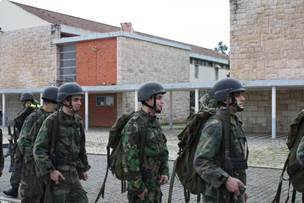 |
|
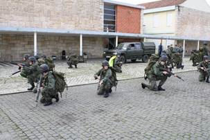 |
|
Sou o primeiro elemento da direita a preparar-nos para a prova de orientação e topografia (OTOP), tínhamos acabado de receber o reforço (comidinha). |
|
Encontro-me ao centro em posição de descanso antes de partirmos para o monte. |
No final da recruta, tivemos treino de Individual Common Core Skills (ICCS) este treino consistiu em aprender a agir em situações de guerra Radiológica Nuclear Biológica e Química (RNBQ) bem como a prevenção e o combate a incêndios e primeiros socorros.
Tanto a guerra RNBQ, os incêndios e os primeiros socorros, são conceitos relacionados com o perigo para as formas de vida. Nesta linha de pensamento é necessário ter em conta as medidas que se usa para prevenir e combater desastres ecológicos e proteger o ambiente.
Os equipamentos de proteção contra o fogo são exemplos que os bombeiros devem usar equipamentos apropriados para combater eficazmente o fogo, além dos equipamentos estes homens devem ter um conhecimento próprio sobre as causas de um incêndio e a maneira de agir para conseguir conter e extinguir a ameaça presente.
Quanto ao perigo para a vida e saúde humana um corpo de bombeiros deve saber também operar em situações de emergência e de resgate de vítimas. Isto requer conhecimento sobre conceitos de salvamento bem como a forma de atuar e proceder perante as vítimas de acordo com o seu número e de acordo com a gravidade dos seus ferimentos.
Em termos de higiene e proteção estes devem estar munidos de equipamentos de socorro estéreis e usar luvas apropriadas para proceder à desinfeção dos ferimentos. No caso de não haver mais nada a água tépida serve perfeitamente.
|
|
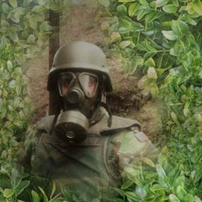 |
|
|
|
Máscara (NBQ) |
|
No fim da recruta, o ponto alto é a cerimónia do Juramento de Bandeira e a despedida do mundo civil para embarcar na vida militar.
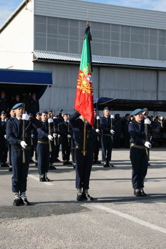
A integração do estandarte nacional
e o momento de cantar
o hino nacional A Portuguesa.
Um estandarte nacional é um símbolo da pátria que tradicionalmente seria ostentado pelas unidades de cavalaria. No caso de Portugal, trata-se de uma espécie de bandeira ornamentada da república portuguesa e rebordada por fios de ouro; no entanto, não se destina a ser hasteada tal como acontece com a bandeira nacional. O estandarte nacional é utilizado em cerimónias militares como símbolo máximo da nossa pátria, em que se podem ler as palavras de Luís Vaz de Camões Esta é a Ditosa Pátria Minha Amada.
O estandarte nacional.
Outro símbolo bem conhecido da nossa pátria é a bandeira nacional.
A bandeira portuguesa.
Fonte: http://www.presidencia.pt/
{kind=link}
archive/img/bandeira_g.png
Verde e vermelha; ao centro tem o escudo de Portugal sobre a esfera armilar a comemorar as viagens dos navegadores portugueses. O escudo tem as cinco quinas, que representam os cinco reis mouros vencidos em Ourique por D. Afonso Henriques; em cada quina, vêm-se cinco pontos brancos, símbolos das cinco chagas de Cristo. Em volta do escudo, observam-se os sete castelos tomados aos mouros por D. Afonso III na conquista do Algarve. (AAVV; Educação para a Cidadania, Plátano Editora, Lisboa, 2006, p. 58.)
No contexto histórico, o povo português é um povo de migrações. O atrevimento e o engenho náutico dos portugueses marcaram a nossa cultura na história mundial.
Os descobrimentos portugueses permitiram a colonização e a distribuição do povo português pelos quatro cantos do mundo.
A guerra colonial e as várias pressões externas diminuíram o nosso império no mundo, ao adicionar a estes fatores o impacto da revolução industrial no nosso país. Então obtemos o êxodo rural e a desertificação das zonas interiores. Assim como obtemos por contraste, a emigração e o crescimento da zona litoral e das concentrações demográficas nas principais cidades.
A arquitetura permitiu às cidades uma expansão ordenada dos fogos, o decréscimo dos bairros de lata e tentou minimizar o impacto visual no crescimento urbano resultante desta expansão demográfica. A realocação das famílias para perto da vizinhança e próximo dos seus entes queridos também foi tido em conta por vários arquitetos empenhados nesta missão urbana.
A urbanização e a implementação de meios de transporte alternativos como os comboios, autocarros, metros e até mesmo das ciclovias tem um impacto muito grande nas famílias metropolitanas. Isto permite que as pessoas se desloquem com mais facilidade e em menos tempo nas suas rotinas diárias.
Contribui também para uma diminuição da pegada ambiental refletida com menos uso de viaturas pessoais, portanto menos emissões de CO2.
Além disso melhora a qualidade de vida, no sentido em que as pessoas podem escolher a rota e o meio de transporte mais eficiente para essas deslocações.
Este tipo de eficiência é estudado quer pelas empresas de transporte rodoviário quer pelos aparelhos de Global Positioning System (GPS). O recurso ao uso de grafos para determinar o caminho mais curto ou o melhor caminho para passar por todos os pontos necessários é efetuado aquando a criação de rotas e percursos rodoviários por forma a evitar custos desnecessários.
A eficiência energética numa construção nova é importante quando se pretende comparar os custos em energia que se pode vir a ter futuramente. Neste sentido tenho que falar um pouco sobre o passado e sobre as construções antigas em relação aos tempos modernos.
Antigamente a maioria das construções rurais eram feitas em pedra ou em tijolo, erguidas com um pouco de cimento e com alguma madeira lá se arranjava uma base para os telhados. Naquele tempo a Eficiência Energética consistia em não deixar o vento e a chuva entrar.
Com o passar do tempo, das políticas e com o aumento da tecnologia surgiram as cidades de betão e aço. Ainda assim muitas construções foram erguidas sem olhar para a eficiência energética. Hoje em dia não existe construção que seja erguida e licenciada sem ter em mente a obtenção de um certificado energético.
Um certificado energético é um documento que comprova a eficiência energética de uma construção. Para emitir este certificado é necessária uma verificação por parte de um perito que verifica as construções e procura por fatores que contribuem para a eficiência energética. A existência de isolamento térmico (capoto, reboco, vidros duplos), sistemas solares térmicos (aquecimento de águas sanitárias) e/ou sistemas solares fotovoltaicos (produção energia elétrica limpa) podem muito bem ser fatores decisivos quando se trata de obter um A em eficiência.
Considerando que a maioria das construções em Portugal são de eficiência C. Então o nosso país tem muito que andar para poder competir com os seus vizinhos europeus.
A minha cerimónia do juramento de bandeira foi presidida pelo Excelentíssimo Senhor General, Chefe de Estado Maior General das Forças Armadas, Luís Evangelista Esteves de Araújo (CEMGFA).
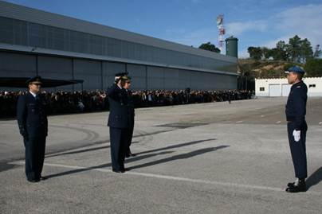
O Ex. Sr. General a dar início à cerimónia de
juramento de bandeira 03/2010.
Nesta cerimónia tive como convidados especiais a minha mãe, o meu irmão e a minha cunhada, que vieram desde a cidade do Porto quase até Alenquer para me ver a marchar. Este facto evidenciou o sentimento de saudade da minha cidade natal, da qual me encontrava afastado.
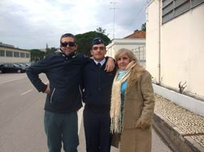
Neste sentido, aproveito para falar um pouco sobre esta cidade, o Porto, mais especificamente o centro histórico, a ponte Luiz I e o mosteiro da serra do Pilar, considerados património mundial da United Nations Educational, Scientific and Cultural Organization. (UNESCO). Deixo aqui a ligação do portal onde se encontram listados os variados patrimónios portugueses referenciados, assim como a ligação que referencia a cidade do Porto como património mundial:
Ligação Portugal
Ligação Porto
Além de toda a diversidade de monumentos e património existentes na cidade, vou evidenciar aqueles que mais me marcaram enquanto influência cultural e patrimonial.
O mosteiro da serra do Pilar, de certo modo, influenciou a minha vida militar. Após ter concluído o recenseamento militar obrigatório aos 18 anos, fui convidado a passar lá o dia da defesa nacional (DDN). Nesse dia lembro-me de ter estado em contacto com o mundo militar e de frequentar palestras de informação e orientação, pois poderia um dia, querer servir Portugal e deste modo, já me era permitido saber a melhor opção possível quando fosse a altura de escolher. Só mais tarde, mais precisamente aos vinte e três anos, iria reconhecer a importância deste dia.
O centro histórico do Porto em si, motivou a minha procura de habitação atual, pois após o falecimento da minha mãe, eu queria continuar a viver no distrito do Porto e a ter uma ligação mais direta com a cidade, mais especificamente através da vista que tenho atualmente sobre ela e que ainda hoje mantenho.
A ponte Luiz I sempre me fascinou, pois quando lá passava, os meus familiares chamavam-me sempre à atenção para o facto de esta ter sido construída pela marca de Gustav Eiffel, assim como a famosa Torre Eiffel em Paris, que tive a sorte de visitar por duas vezes. Ainda hoje lembro estas palavras.
Só quando estamos longe do local onde crescemos, é que valorizamos e percebemos a ligação forte que temos com as nossas origens, no meu caso, a cidade do Porto.
O Palácio da Bolsa e a Ordem de São Francisco. Estão considerados.
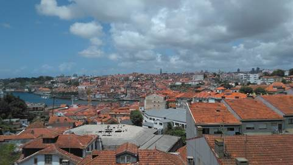
Avenida Rosa Mota Vila Nova de Gaia
|
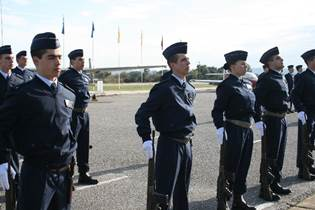 |
|
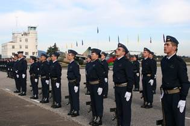 |
|
Sou o elemento esticadinho da direita. |
|
Sou o segundo elemento a contar da direita, estamos formados à espera do início da cerimónia do juramento de bandeira. |
Após a integração do estandarte nacional as forças em parada prestam homenagem em apresentar arma e cantando o hino nacional A Portuguesa.
O juramento: - "Juro, como português e como militar, guardar e fazer guardar a Constituição e as leis da República, servir as Forças Armadas e cumprir os deveres militares. Juro defender a minha Pátria e estar sempre pronto a lutar pela sua liberdade e independência, mesmo com o sacrifício da própria vida.
|
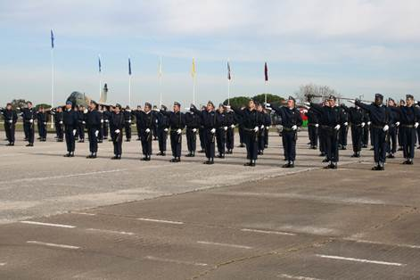 |
|
Aqui, estamos a recitar o juramento. Foi o momento em que a parada tremeu. |
Depois da cerimónia, dirigimo-nos aos hangares que estavam preparados para receber os convidados com um grande bolo e champanhe. Aproveitamos esse momento e fomos ver os aviões expostos. Depois, voltamos todos juntos para casa.
|
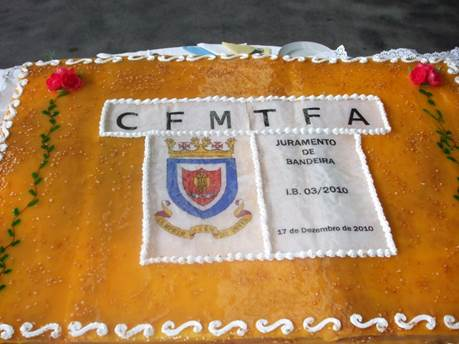 |
|
O nosso bem merecido bolo.
|
A partir deste momento, pude ostentar a minha meia asa e levá-la comigo, junto ao peito para as formações técnicas no âmbito da minha especialidade de condutor auto.
Após ter concluído a instrução básica (recruta), iniciei a instrução complementar no Curso de Formação de Condutores. Uma das disciplinas que tive foi Mecânica Automóvel. Dentro da mecânica automóvel estudei os sistemas que constituem os veículos. Estes sistemas são o Motor de Combustão (Diesel) ou de Explosão (Otto e Wankel) e seus órgãos de funcionamento fixo e móvel, o Chassis/Carroçaria, Sistema Elétrico, de Direção, de Suspensão e de Travagem.
No estudo ao sistema de travagem vimos que este podia ser de acionamento hidráulico, ou seja, atua sob a influência de um líquido (óleo de travões) e usa a capacidade incompressível dos líquidos para exercer força (pressão). Este sistema define-se num circuito hidráulico fechado, constituído por uma bomba (geração de pressão), tubos e canalização, válvulas (atuação), pedais (comando), calços e discos.
Este sistema é auxiliado pelo motor no estado de trabalho com uma peça chamada de servofreio que serve para que a força exercida pelo condutor seja inferior à força que seria necessária no caso de travar apenas pelo acionamento mecânico como se tivéssemos o motor desligado e sem qualquer assistência. Possui também um depósito de óleo hidráulico próprio para que seja possível verificar o respetivo nível e substituir o óleo do sistema na altura da troca dos travões. Nesta altura é necessário verificar o estado do óleo hidráulico e substitui-lo se não tiver de acordo com a validade e respetivo estado de conservação. Após a substituição dos travões e do óleo é necessário sangrar o sistema e assegurarmo-nos de que não existe nenhum ar restante dentro do sistema e evitar qualquer acidente por falha no sistema de travagem.
A força de atuação é comandada através de válvulas de acionamento mecânico quando é exercida pressão sobre o pedal do travão esta obriga o fluído a se deslocar para o ponto de menor resistência, neste caso o sistema de atuação dos calços. Quanto mais se carregar mais pressão é exercida por tanto mais força de travagem temos. Para evitar que a força exercida nos travões obrigue as rodas a derrapar e sofra a consequente perda de tração, foi criado o sistema de travagem anti bloqueio (ABS) que permite às rodas um ligeiro movimento em travagens brutas por forma a evitar que as rodas percam a aderência e derrapem (mantendo-se imoveis enquanto o resto do veículo se desloca devido á inércia). Os travões em si quando recebem a pressão comandada no pedal atuam sob as válvulas que obrigam os calços a serem empurrados contra aos discos e por sua vez obrigam as rodas a parar por fricção.
Já no estudo do sistema de suspensão, este pode ser pneumático e usa o ar como forma de atuar. Caracteriza-se por uma bomba que comprime o ar, um reservatório, uma válvula para a purga da água acumulada no circuito, o circuito de tubagens e as válvulas de atuação e comando que podem ser eletromecânicas. Muito semelhante ao circuito hidráulico, mas mais exigente pois necessita que a bomba atue cada vez que a pressão é insuficiente para fazer mover a carroçaria. Serve para amortecer os impactos entre a viatura e o solo, e permite regular a suspensão para a altura pretendida, de acordo com as necessidades da condução.
Na preparação do trabalho a Ergonomia permite que o trabalho seja adequado ao ser humano, garantir o planeamento do trabalho é muito importante para ter em conta o material e as ferramentas necessárias à execução do mesmo bem como orçamentar e adquirir os materiais necessários. A saúde, a segurança e a higiene no trabalho são outros três fatores a ter em conta aquando do planeamento do trabalho de modo a que os trabalhadores estejam confortáveis, calmos e saudáveis no exercício das suas funções, além disto é preciso ter em conta o relógio biológico das pessoas pois existem pessoas que estão mais ativas de noite (mochos) e existem pessoas que estão mais ativas de dia (cotovias). Selecionar os materiais e as ferramentas necessárias, bem como estar confortável e adotar posturas confortáveis e usar os epi´s corretos são medidas a adotar no mundo do trabalho. Devemos ter em atenção também o ambiente (frio/calor), bem como a fadiga, a fome, o controlo de luminosidade, e a hidratação para proceder ao trabalho nas melhores condições.
As técnicas ensinadas em serralharia de bancada são as competências básicas da metalomecânica. São técnicas de trabalho regulares sem a necessidade de maquinação, com alguma precisão e requerem técnicas de trabalho manual tais como: a serragem, a traçagem, a limagem, o lixamento, a quinagem e a roscagem. Pode ser efetuada em qualquer local basta apenas uma simples bancada de trabalho um torno mecânico e algumas ferramentas bem com utensílios de metrologia.
Quando as técnicas de bancada não chegam, quando o material e muito duro e a forma muito elaborada, precisamos de maquina-las. Existem duas máquinas-ferramenta principais o torno e a fresadora. O torno faz peças de revolução, a fresadora faz paralelepípedos.
A parte mais complicada de qualquer negócio, quando se trata de qualidade, é definir a qualidade, o que se torna difícil quando temos um produto e queremos torná-lo necessário e atrativo. Isto porque encontramos diferentes pessoas que, apesar de pertencerem ao mesmo público alvo, têm noções de qualidade diferentes. Então, isto torna-se de primordial importância na definição em todas as valências da qualidade que queremos inerentes ao nosso produto.
Quando abordamos o motor de um carro, estudamos que este é composto por três partes: Cabeça, Bloco e Cárter. Devido ao movimento, o motor está sujeito a várias condições, quer térmicas, quer mecânicas. Estas condições podem fazer com que os parafusos fiquem sujeitos a pressões, a temperaturas e a trepidação elevadas. Se estes parafusos não forem devidamente apertados, podem soltar-se ou quebrar. Eles são apertados por uma chave apropriada que mede a força exercida em Newtons (N). Como a maioria dos motores requer manutenção, eles são construídos de modo a criarem uma ligação não permanente, ao contrário dos processos de ligação permanentes, que são a brasagem fraca (soldar a estanho) ou a soldadura autogénea (mesmo metal). As uniões não permanentes, por natureza, têm mais dificuldades em resistir às pressões, às temperaturas e aos movimentos mecânicos. São também uniões que são aparafusadas (parafusos, anilhas, porcas) ou rebitadas.
Existem também parafusos-rebite que são usualmente encontrados na aeronáutica e permitem o acesso a zonas da fuselagem para manutenção.
A manutenção pode ser pensada de três formas: corretiva, preventiva ou preditiva.
Manutenção preditiva é a manutenção que vem por defeito, no caso do exemplo dos automóveis, e é chamado o livro de revisões.
Manutenção preventiva já é aquela que tem o intuito de seguir o histórico do livro de revisões.
Manutenção corretiva, então, é a que, regra geral, ninguém quer, pois significa que é necessário corrigir uma avaria.
Na construção de um veículo é possível abordar a longevidade esperada que este deve ter. É possível elaborar gráficos (curva de banheira) para estimar os custos da manutenção ao longo do tempo, bem como as idas à oficina.
Este tipo de gráfico mostra-nos que as deslocações para manutenção são frequentes quer no início e quer no fim de vida útil de um automóvel.
Com os custos em mente, podemos falar um pouco sobre o iceberg de custos. Por analogia ao iceberg podemos dizer que a parte visível do iceberg representa cerca de ¼ do iceberg como um todo. Assim ao considerar que a parte visível do iceberg representa os custos diretos (custos de mão de obra, custos fixos, custos de material, custos de trabalhos subcontratados). Então, a parte maior do iceberg representa os custos indiretos (custo de mão de obra de produção parada, amortização dos equipamentos, custos induzidos e custos de recolocação dos processos em movimento). Com tudo isto, podemos dizer à partida que ninguém quer ter custos indiretos por avariar uma máquina numa linha de produção automóvel por exemplo, pois todo o tempo que a máquina estiver parada significa que a empresa está a perder dinheiro. Já para não falar no custo da reparação e nos custos pagos aos funcionários que estão impedidos de trabalhar, mas que têm que receber tal e qual como se estivessem a trabalhar.
Quando concluí o curso de Condutor Auto no CFMTFA fui convocado à cerimónia de encerramento do curso presidida pelo Comandante do CFMTFA.
|
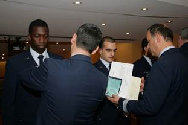 |
|
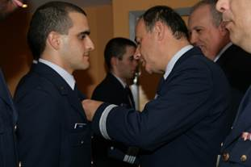 |
|
O momento de receber a carta de condução militar, o diploma de condutor auto da força aérea portuguesa e o respetivo certificado de habilitações. |
|
O momento em que fui brevetado com o distintivo de especialidade de secretariado e apoio dos serviços (As duas asas). |
|
|
|
Aqui está o meu distintivo com duas penas e uma granada bem como as ramas de louro e oliveira e as duas asas, a representar o final da instrução militar e o início da carreira ao serviço da força aérea portuguesa. |
Todos os alunos foram a sorteio para a escolha da unidade de colocação preferida. A unidade de colocação mais próxima de mim era a Base Aérea N.º 5 (BA5) em Monte Real, Leiria. Com sorte consegui escolher a BA5 como minha unidade de colocação e foi lá que iniciei a minha carreira militar como Soldado Condutor Auto da Força Aérea Portuguesa (SOL/CAUT/FAP).
Assim que cheguei à BA5, fui colocado na secção de Movimento Auto da Esquadrilha de Transportes pertencente à Esquadra de Manutenção Terrestre do Grupo de Apoio à Unidade.
No movimento auto pude contactar com todo o tipo de materiais e ferramentas de manutenção terrestre.
Quando tive a perceção dos materiais reparei que existem três pensamentos distintos em relação a eles: Processo, Mecânica e Tecnologia.
A tecnologia veio permitir um conhecimento técnico e mais aprofundado sobre a mecânica e a tecnologia dos materiais.
A tecnologia evoluiu tanto ou quanto o nosso conhecimento em ramos como da matemática, física e da química. Tanto que num processo de criação tecnológica o Homem pode moldar as suas ferramentas e os seus materiais de acordo com a sua vontade e de acordo com o seu conhecimento.
Hoje em dia, o mundo à nossa volta está cheio de processos de fabrico mecânico. A indústria aposta no fabrico mecanizado e automatizado para reduzir nos seus custos e aumentar à produção de materiais.
Quero eu dizer que materiais como os metais, têm vindo a adequar-se às suas solicitações de trabalho mecânico. De tal modo que o processo de fabrico de um material como uma chapa, um cabo/fio, tubo. Sofre diferentes processos de fabrico desde a sua criação.
Ao considerarmos o processo de forja de um material como o aço, que é obtido pela combinação dos elementos de ferro e carbono a altas temperaturas. Até que este aço chegue às nossas mãos é transformado em várias vezes e submetido a muitas forças durante o seu processo de fabrico. A laminagem (criação de folhas), trefilagem (criação de fio) e a calandragem (criação de aros). São exemplos de processos a que o aço pode estar sujeito.
Isto para dizer que desde o processo de forja de um metal até à sua representação física como uma chapa, fio ou tubo envolve muita técnica, mecânica e ciência.
No decorrer do meu serviço militar, durante o período de adaptação ao serviço, apresentei-me aos meus superiores hierárquicos e recebi as boas vindas ao grupo de trabalho. Recebi instrução em relação às tarefas a executar e ao modo mais adequado à execução do trabalho em si.
As tarefas mais básicas inerentes ao meu serviço de condutor. Consistiam em fazer recados, transportar pessoas, abastecer, limpar e manter as viaturas da frota.
Além de me apresentar na unidade e de me integrar no grupo, recebi instrução em relação às missões de serviço bem como à escala de serviço de condutor à unidade.
Após adquirir as competências necessárias, fui integrado na escala de serviço de condutor à unidade.
Fui executar uma missão de serviço para o laboratório de metrologia da unidade.
Nunca tinha estado tão perto desta ciência. O pessoal responsável pelo laboratório necessitava de carregar uns materiais para calibrar em Lisboa, para o Instituto de Soldadura e Qualidade (ISQ) e para o Centro de Apoio Tecnológico à Indústria Eletromecânica (CATIM).
Quando fui buscar a carga ao responsável do laboratório, fui convidado a visitar as instalações. No decorrer da visita explicaram-me o que faziam no laboratório, o serviço consistia em assegurarem-se que todos os materiais de medida executavam a sua função corretamente e dentro das margens exigidas, quer pela segurança quer pela lei. Foi aqui que me apercebi que esta ciência está por todo lado e até que ponto é necessário existir um controlo de qualidade nestes equipamentos. Na aviação militar é necessário um departamento próprio para que todos estes aparelhos estejam em perfeitas condições. No entanto, para prevenir o mau funcionamento e para proceder a uma calibração certificada é necessário que alguns destes instrumentos sejam encaminhados para o respetivo laboratório. Constatei que eu estava a executar uma missão de alta responsabilidade.
Os aparelhos de medida são sensíveis e, portanto, necessitavam de ser transportados de maneira cuidada. Além disso alguns destes instrumentos e aparelhos eram muito dispendiosos. Procedi com a minha missão após segurar a carga e levei os equipamentos para os respetivos laboratórios.
A partir daqui, passei a ter mais consciência da necessidade da metrologia e comecei a prestar atenção aos selos de qualidade mais comuns na minha vida: a balança da loja ao pé de casa e a bomba de abastecimento de combustível. Ambos estão sujeitos a uma verificação periódica do seu estado de funcionamento e necessitam renovar o selo para que a manutenção esteja up-to-date, assim vou saber se estou a pagar por um peso ou por um volume de combustível a quantia presumidamente adequada. Além disto, consigo ter bem presente esta fantástica experiência que tive com a metrologia e a lição que me deu uma simples missão de serviço.
Ainda no primeiro tempo de tropa conheci a mãe - Carmen Maria Pinto -, do meu primeiro e, infelizmente, falecido filho, David Manuel Pinto do Rosário.
Nessa altura, recordo-me de viver intensamente a relação que tinha com esta mulher e de receber a notícia de que iria ser pai pouco tempo após o início da relação (dois meses provavelmente). Lembro-me também dos sentimentos todos que vivi com esta notícia e de fazer um esforço enorme para que tudo corresse bem com o nascimento do meu primeiro filho. Reduzimos e deixámos de fumar bem como cuidávamos de nós dentro dos possíveis. Os nove meses passaram a voar e de repente lá estava eu no Hospital de Santo André, em Leiria, para assistir ao parto da minha mulher. O parto foi algo demorado e a esposa recebeu uma anestesia epidural. Nesse lindíssimo dia, a 9 de fevereiro de 2012, tive a oportunidade de ajudar o médico a fazer força sobre a mãe, apenas dando os braços e apoiando-nos em cima do seu ventre, para que o nascimento acontecesse.
Na altura, correu tudo bem e, após registarmos o menino e de tratar de tudo o que foi necessário, logo tivemos alta.
|
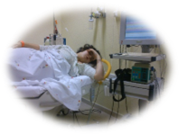 |
|
|
|
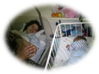 |
|
A mamã |
|
A espera |
|
A alegria |
Os primeiros tempos foram de muita preocupação e cuidado; o menino não teve a oportunidade de ser amamentado de forma natural e tínhamos que lhe dar leitinho sintético.
Infelizmente, após exatamente dois mezinhos de vida, no dia 9 de abril de 2012, viria a falecer este meu menino, devido a morte súbita.
|
O meu primeiro filho - David |
|
|
O desgosto, a dor, a mágoa e o sofrimento foram tremendos . É horrível para mim descrever tais sentimentos.
A vida deixou de fazer sentido, abandonei todos os sonhos e espectativas futuras e, para piorar a situação, as nossas famílias separaram-se e não recebi nenhum apoio da parte da mãe.
Com algum tempo e bastante terapia, eu fui vagarosamente começando a voltar à rotina diária. No entanto, tudo estava com outras cores, mais cinza, mais esbatido.
Foi durante esta altura e na esperança de encontrar alguém que quisesse partilhar a minha dor que eu encontrei a minha Mulher atual, a Gisela Ferreira Pereira, e após alguns dias de conversa, desabafos e carinhos, começámos a namorar, superando juntos esta etapa difícil da nossa vida.
|
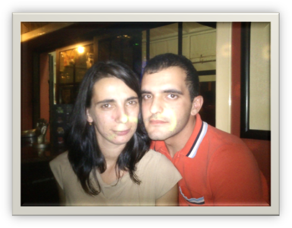 |
|
A minha esposa - Gisela |
O tempo passou, mas a minha mãe nunca se conformou com o desgosto de perder o seu netinho. Foi então que, após dois anos amargurados, faleceu a 16 de outubro de 2014.
|
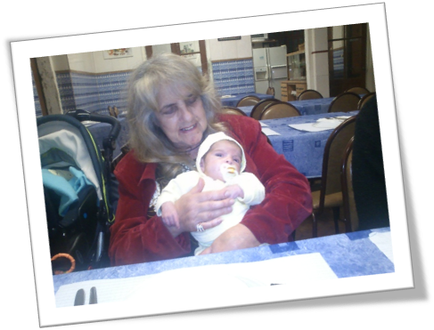 |
|
A minha mãe com o meu David. |
|
|
A morte da minha mãe deixou-me de rastos de novo. Tanto que, simplesmente, deixei de querer continuar fosse o que fosse. Desprendi-me da sociedade e estive algum tempo de baixa a tentar-me recompor.
Felizmente, Deus ofereceu-me uma luz e felicitou-me com um filho maravilhoso para me tirar da escuridão, do frio e da tristeza.
Foi assim que, a 3 de maio de 2015, veio ao mundo o meu Daniel Pereira Ventura, fruto da minha relação com a esposa Gisela.
|
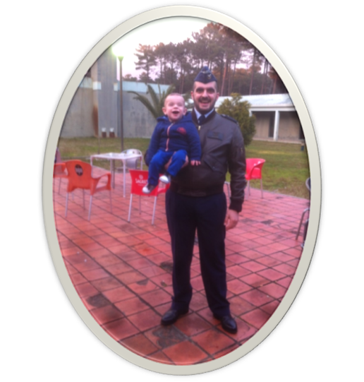 |
|
O meu segundo filho Daniel, no Aeródromo de Manobra N.º 1 Maceda Ovar |
Nos seres humanos, as características como a cor do cabelo, a cor dos olhos, a estatura, o temperamento e a suscetibilidade para doenças são algumas das informações herdadas aquando da conceção. No entanto, muitas dessas características são influenciadas pelo ambiente que rodeia os seres vivos.
É frequente identificarmos nas pessoas características ou carateres semelhantes aos dos seus pais ou avós. Isto acontece porque o ser humano, tal como todos os seres vivos, herda dos seus progenitores as informações (codificadas) que determinam as suas características hereditárias A este mecanismo chama-se hereditariedade. A ciência que estuda os mecanismos da hereditariedade chama-se genética. O gene é o fator responsável pela transmissão das características hereditárias e corresponde a uma sequência de nucleótidos da molécula de ADN. Os genes alelos são formas alternativas de um mesmo gene. Existem os genes alelos dominantes que encobrem a presença de outro alelo. Exprimem-se nos homozigóticos dominantes e nos heterozigóticos, e representa-se, geralmente, por uma letra maiúscula.
Já os alelos recessivos são aqueles que não se exprimem na presença de outro alelo, apenas quando existem duas cópias. Representam-se, geralmente, por uma letra minúscula. Um indivíduo homozigótico é aquele que possui dois alelos idênticos de um determinado gene. Produz apenas um tipo de gâmetas em relação ao gene considerado. Enquanto, um indivíduo heterozigótico possui dois alelos diferentes de um determinado gene. Produz dois gâmetas em relação ao gene considerado.
Nesta ordem de ideias, venho aqui apresentar uma característica recessiva em relação à minha família. Tenho, por exemplo, o enrolar da língua.
Estudo sobre a hereditariedade na transmissão do gene recessivo (enrolar a língua):
ll Ll
Daniel (Pai) Gisela (Mãe)
Daniel (Filho)
ll
|
♀
♂ |
L |
l |
|
L |
Ll |
ll |
|
L |
Ll |
ll |
Legenda:
Enrola a língua (L)
Não enrola a língua (l)
Resumo do estudo sobre hereditariedade genética:
Eu não enrolo a língua (recessivo), a minha esposa enrola (dominante) e o meu filhote também não enrola a língua (recessivo).
Neste estudo, ao elaborar o xadrez mendeliano, descobri que existiu 50% de hipóteses para que o meu filho herdasse esta característica.
Já com algum tempo de serviço e experiência e no decorrer da minha carreira militar. O comandante da unidade convidou-me a frequentar algumas formações inerentes às minhas funções.
Estas formações foram o curso de empilhadores pesados e curso de condução na área do aeródromo.
Além das formações profissionais fui tirar a carta de viaturas pesadas de passageiros categoria (D).
Eram frequentes também palestras ao nível da saúde e higiene bem como exames médicos e consultas regulares. Além disto a polícia aérea frequentemente executava missões de controlo e despiste de álcool e drogas.
Recordo-me de me ser oferecida a possibilidade de trabalhar como aeroabastecedor e de receber instrução sobre esta função. Aprendi e relembrei a condução de cisternas, a preparar e a executar abastecimentos. Aprendi também a registar e a gerir os abastecimentos aéreos bem como os terrestres.
Estando a receber a radiação solar direta, as cisternas eram sujeitas à dilatação volumétrica que ocorria no combustível e punha em causa a estrutura da cisterna.
Como o calor dilata os corpos, se a cisterna estivesse cheia de combustível e a sofrer uma condução térmica pela radiação solar a incidir diretamente na chapa da cisterna, ocorria uma dilatação volumétrica no combustível que estava no reservatório. Se não houvesse o cuidado de evitar encher o reservatório por completo, os efeitos da dilatação volumétrica podiam fazer com que a cisterna rebentasse e até podia eventualmente resultar deste descuido uma explosão do combustível.
Para evitar que este tipo de acidentes aconteça os camiões podem ter sistemas de prevenção. Podem ter uma pequena chaminé para evitar a criação de vácuo e permitir a expansão do combustível de forma natural. Existem também cisternas que permitem selar o combustível em vácuo e ser controladas com válvulas de controlo manual. Estas válvulas são operadas na altura de abastecer a cisterna ou escoá-la e permitem que o combustível fluía livremente.
Esta noção é muito importante quando se trabalha com combustíveis, tão importante que podemos considerar que a melhor altura para abastecer as nossas viaturas pessoais é de madrugada. Aproveitando as horas de menor calor e tirar proveito do fenómeno termodinâmico, beneficiando assim de uma contagem mais eficiente do combustível.
Entretanto surgiu um trabalho para fazer. Este trabalho era referente a um velho cilindro do pavimento do aeródromo e era pretendido que este fosse transformado num monumento e colocado à exposição dos elementos.
Para realizar este trabalho foi necessário apenas uma discussão em cima do joelho sobre o que haveria de ser feito. Acabando por se decidir limpar e raspar a ferrugem acumulada ao longo dos anos.
Na altura nem sequer dava muita importância à ferrugem, assumindo a sua existência como algo natural e fruto do processo de decomposição dos materiais. Hoje em dia sei que a ferrugem não é tão linear assim e faz parte de um processo chamado de corrosão.
A corrosão pode ser observada de duas formas: seca ou húmida. A principal diferença entre estas é que a corrosão seca sofre oxidação (exposição ao O) sofrendo de degradação química tal como acontece nos metais ferrosos com a formação de óxido de ferro (também conhecida por ferrugem), na corrosão húmida (exposição ao H2O) já acontece uma degradação eletroquímica o que facilita o processo corrosivo da oxidação dos materiais por conversão da diferença de potencial dos materiais pela corrente eletroquímica verificada entre ânodos e cátodos assim como acontece com as baterias num processo de eletrólise.
Para perceber melhor esta matéria foi mais fácil para mim entender um pouco sobre a indústria náutica e o que acontece com um metal com um potencial diferente que ao longo do seu processo de degradação liberta o seu material para o material envolvente, fortificando deste modo o material mais fraco em vez deste se libertar para o sistema envolvente.
Um exemplo prático será aproveitar a energia do sol para bombear água. Tive oportunidade de trabalhar num sistema semelhante em que a energia aproveitada de um painel solar fotovoltaico serve para alimentar uma bomba de água que leva a água a montante para que desça em cascata. A bomba de água é alimentada pela corrente contínua (DC) proveniente do painel. Existe um quadro elétrico equipado com fusíveis, barramento de proteção à terra, corte-corrente e descarregador de sobretensões (DST). Junto ao quadro elétrico existe um quadro eletrónico que controla a corrente contínua e permite a sua regulação, com isto é possível ajustar a força da bomba de água manualmente no quadro eletrónico.
Outro sistema em que tive a oportunidade de trabalhar, aproveita a energia solar fotovoltaica alimentando uma ventoinha DC de modo direto, existe apenas uma caixa de controlo manual equipada com botão on/off e um regulador eletrónico para aumentar/diminuir a velocidade de rotação da ventoinha.
Os sistemas fotovoltaicos também servem para alimentar as habitações e a indústria. Sendo que a grande diferença neste caso é o consumo. Uma habitação singular requer um sistema simples, enquanto que uma fábrica de produção já requer um sistema mais elaborado.
Ainda assim quer no uso doméstico, quer na indústria, existe a possibilidade de se escolher sistemas diferentes.
Se considerar que necessito de alimentar a minha habitação e que não me quero ligar à rede elétrica. Posso escolher um sistema fora da rede off grid. Em que a energia solar serve para alimentar um banco de baterias fazendo com que o armazenamento da energia alimente a minha instalação elétrica durante as horas em que o sol está ausente. Necessita de um banco de baterias, quadro elétrico equipado com proteções (interruptores, disjuntores, DSTs, barramentos e fusíveis), um regulador de tensão para carregar as baterias e de um inversor para transformar a corrente DC em corrente alternada (AC).
No entanto se quiser me ligar á rede posso usar um sistema on-grid. Neste caso a energia fornecida do sistema solar fotovoltaico é injetada diretamente na rede ou consumida no momento sem o recurso a baterias e permitindo uma redução no custo sobre o consumo energético, aplicado pela companhia de fornecimento de energia. Requer um inversor capaz de medir o clock de rede (Tensão da Rede), só liga existindo esta tensão.
Podemos ainda escolher ter um sistema misto. Este tipo de sistema usa a energia da rede e a energia do banco de baterias, aqui o sistema apenas está ligado à rede para apoiar a instalação elétrica.
Além dos sistemas que já referi existem sistemas híbridos, estes sistemas são capazes de gerir o consumo e colher ou injetar energia quando necessário. Para criar este tipo de sistema são necessários inversores híbridos.
Na criação e dimensionamento de um projeto de sistema solar fotovoltaico devemos ter em consideração o tipo de projeto que vai ser realizado. Neste sentido existe um trabalho prévio de angariação de dados acerca do que se pretende instalar.
Podemos começar por decidir onde vai ser o nosso sistema e o propósito que este vai servir. Com este estudo inicial do projeto deve-se dar importância a todos os fatores que impliquem com o nosso sistema. Fatores como o aproveitamento solar, o sombreamento, a orientação solar, a direção dos módulos solares e a inclinação dos ângulos a que vão operar são tidos em consideração aquando deste levantamento de informação.
A necessidade de dar uma dimensão energética ao nosso sistema solar fotovoltaico é devida a fatores de consumo energético. Ao fazer uma análise dos consumos de um sistema podemos descobrir a quantidade de energia consumida ao longo do tempo o que faz com que se obtenham dados concretos sobre o consumo num sistema. De seguida podemos então selecionar o equipamento que pretendemos mediante as ofertas existentes no mercado (valores de tabela) para a energia que se pretende consumir. Então desta seleção surge um orçamento para o sistema bem como é feita a elaboração de planos de construção, levantamento de projetos de construção anteriores e a criação de esquemas elétricos por forma a avançar para a fase de construção.
Sendo assim basta seguir o plano de construção, construir as fundações ou plataformas de suporte ao sistema. É nesta fase que se constrói tudo o que for necessário para acolher o novo sistema solar fotovoltaico. No estudo prévio são tidos em conta as questões como o peso dos módulos, a altura a que vão ficar e o tipo de colheita para que vão trabalhar, seja um sistema fixo, ajustável ou autodireccional este vai necessitar de aguentar a exposição aos elementos. O tipo de índice de proteção para todo o sistema é tido em conta e após a construção de todos os suportes necessários segue-se um teste aos equipamentos que vão ser instalados.
Depois da fase de construção do nosso projeto de sistema solar fotovoltaico segue-se a instalação de todos os componentes que constituem o nosso sistema. Os módulos solares, a cablagem, o quadro elétrico, o inversor bem como o regulador e as baterias se tal for o caso.
Os equipamentos de proteção individual, as ferramentas e o material necessário à instalação é todo escolhido para proceder à instalação de todo o sistema novo.
Constituir uma empresa requer o conhecimento das formas jurídicas de o fazer. No entanto tudo se resume quanto ao capital que se quer investir assim como o número de sócios que vamos ter. A forma como se divide a sociedade e o capital nela envolvido é também tida em conta aquando da constituição da empresa.
Uma empresa surge de uma motivação. Quer seja pessoal ou coletiva a motivação advém da necessidade de satisfazer objetivos.
Abraham H. Maslow é um psicólogo norte-americano que elaborou um estudo sobre satisfazer as necessidades do ser humano ao nível pessoal e profissional. Para isto o psicólogo fez um esquema com a forma de pirâmide onde consta a teoria da necessidade de Maslow.
A Pirâmide de Maslow é dividia em cinco níveis hierárquicos, cada um formado por um conjunto de necessidades. Na base da pirâmide estão os elementos que são considerados primordiais para a sobrevivência de uma pessoa, como a fome, a sede, o sexo e a respiração. Para progredir na hierarquia é necessária a conquista das condições elementares da Pirâmide, passando para os próximos níveis, um a um, até alcançar o topo.
No contexto profissional e de motivação do trabalho, a Pirâmide de Maslow é aplicada da seguinte forma:
Base: necessidade de horários flexíveis, descanso físico e mental;
2º nível: necessidade de segurança no trabalho, um bom salário e garantias de estabilidade;
3º nível: construir amizades e boas relações com os chefes no ambiente de trabalho;
4º nível: manter um feedback com a empresa, ser reconhecido pelos resultados que apresenta, receber promoções e aumentos de salário ao longo da carreira;
Topo: Influências nas decisões, ter autonomia no trabalho.
Outras teorias são as de McGregor, (teoria da motivação X e Y) Herzberg (teoria dos dois fatores) e V. H. Vroom (teoria das espectativas).
Estas teorias incidem na motivação, higiene e espectativas quer dos funcionários quer da empresa em si. Pois convém termos um ambiente de trabalho na onde todos os níveis hierárquicos nela inseridos laborem satisfeitos para que a empresa cresça.
Neste sentido para que haja entendimento é necessário existir comunicação. A empresa tem que ter um canal de comunicação com o cliente e com o funcionário, bem como o funcionário deve ter comunicação com a empresa. Por vezes numa cadeia hierárquica complexa é difícil difundir as vozes do trabalhador e da empresa, isto pode gerar mal-entendidos e confusão. Pode até mesmo ser um fator de diminuição da qualidade na empresa.
Um projeto é um meio para realizar um objetivo. É uma atividade realizada apenas uma vez e os seus intervenientes são elementos de uma equipa multidisciplinar.
Existem referências que podem ser adotadas como estrutura de um projeto, devemos ter em conta o custo, a performance e o calendário.
No início do projeto deve ser reunida toda a documentação acerca da legislação aplicável.
De seguida devem ser levantadas todas as especificações e normas técnicas que impliquem o projeto.
É feito um estudo sobre a viabilidade técnica e financeira. Podemos também usar gráficos de Program Evaluation and Review Technique (PERT) ou Gantt e programas para nos auxiliar na criação de um projeto. O MS project é um programa de software que ajuda o utilizador a agendar tarefas e a calcular prazos de conclusão. Útil para projetos mais complexos, elaborados ou extensos que requerem uma estrutura digital preparada para aguentar com o conteúdo do projeto em si.
Um exemplo de escolha usando o método de caminho crítico para a tecnologia Solar Venti.
Sabíamos que perfurar a placa e soldar a caixa poderiam ser processos separados feitos no próprio dia. Escolhemos o caminho crítico para o final da obra através da contagem de dias de fabrico.
1. Caixa (2 dias)
2. Placa furada (5 dias)
3. Pintar placa (1 dia)
4. Soldar as caixas (1 dia)
5. Furar a chaminé (1 dia)
Descobrimos que seriam necessários 9 dias de trabalho para que a obra pudesse ser concluída.
Ainda depois de saber o tempo que demora é necessário orçamentar tudo bem como recolher todo o material técnico.
Após este estudo todo é necessário apresentar a ideia ao dono do projeto com todos os dados.
A memória descritiva do projeto (texto longo), a memória dos cálculos, as peças desenhadas e orçamento devem constar na apresentação do projeto.
Quando acabou o meu contrato com a Força Aérea Portuguesa eu decidi ir trabalhar. Encontrei uma oferta para barman de hotel. Contactei a empresa, marquei entrevista e acabei por ser selecionado.
Fui trabalhar para um bar inserido dentro de um resort **** (4 estrelas). Aprendi a servir cocktails e montar o serviço de lanche para os clientes. Além das funções do bar eu ajudava com os talheres, mesas e copa, como reforço.
Entretanto surgiu a oportunidade de frequentar formação de vigilante e eu aceitei.
Após a conclusão da formação de vigilante eu voltei a estudar já para técnico de informática de sistemas.
Entretanto surgiu a oportunidade de trabalhar como vigilante e eu aceitei. Aprendi muito no terreno, mas penso que fui acabar por escolher uma profissão em que me sentia inadequado devido à minha experiência e à minha maneira de ser. Sentia-me para além do que isso. Tinha que me manter ativo e a estudar.
Acabei por entrar para um curso de técnico instalador de sistemas solares fotovoltaicos, conhecer os colegas de turma, os formadores, os técnicos e todo o resto do centro.
Ao iniciar a formação esperava apenas concluir o ensino secundário para poder ter mais oportunidades disponíveis. Prosseguir os estudos para o ensino superior sempre foi a minha vontade principal.
Entretanto no decorrer da formação fomos perdendo elementos no grupo e acabamos por ganhar uma afinidade melhor com os formandos que restaram. Foi bastante difícil ter que lidar com a formação, colegas e com família no decorrer de um ano e meio. Mas com alguma ajuda dos amigos e da família foi possível concluir a formação.
Por fim surgiu o estágio curricular e tive a oportunidade de ser acolhido pela empresa Solar Project em Arcozelo, Miramar. Com o decorrer do estágio trabalhei com sistemas solares fotovoltaicos e sistemas solares térmicos. Embora não tenha existido nenhuma instalação durante o tempo de estágio foi me possível proceder à manutenção dos sistemas fotovoltaicos.
A manutenção consistia em lavar os painéis, reapertar os parafusos, verificar as ligações e aplicar o spray protetor nos contactos de terra.
De resto foi possível também conhecer melhor os sistemas solares térmicos e viajar um pouco por todo o lado. O Sr. Manuel (Serralheiro) e o Sr. Eng. Zé (Tutor) estiveram sempre do meu lado para me ajudar e esclarecer qualquer dúvida que pudesse eventualmente surgir.
Gostei imenso de estar em contacto com os sistemas que estudei embora não tenha ficado a trabalhar na empresa.
No futuro espero ingressar no ensino superior ou nos quadros da função pública.
Elaborado por: Daniel Ventura
quinta-feira, 20 de maio de 2021